Существуют районы, где по-настоящему хочется жить, и Басманный относится к этой категории. Здесь исторические усадьбы соседствуют с винодельнями, бывшие заводы перепрофилировались в культурные кластеры, а популярная фраза в исполнении Ларисы Гузеевой «вы сошли с маршрута» значит, что вас ждет серия приятных случайностей: обычный ужин после работы может легко превратиться во встречу с кинокритиком или дегустацию с сомелье, а прогулка по парку — в концерт на свежем воздухе. Именно это в Басманном районе и привлекает молодое поколение, ведь куда ни придешь, в атмосферное кафе или на спортивную площадку, вас ждут яркие впечатления.
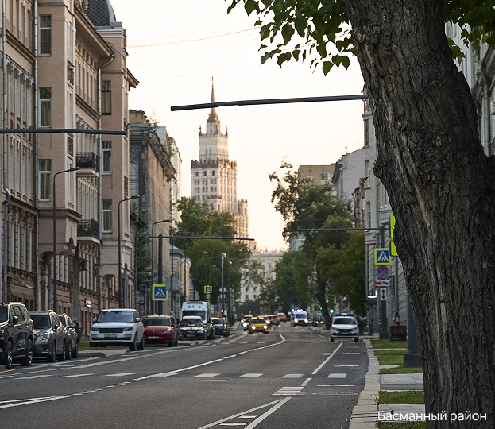
Басманный район ЦСИ Винзавод
ЦСИ Винзавод
Басманный всегда
знает, что предложить
Суперсила Басманного в его многослойности. Будущие инженеры, физики, математики и программисты быстро встраиваются в технологическую экосистему вокруг Бауманки или НИУ ВШЭ, а те, кто тяготеет к креативным индустриям, скорее всего заинтересуются обучением в Британской высшей школе дизайна. Если выйти на улицу и прислушаться, вы всегда застанете обсуждение какого-то творческого проекта, с которым вам, возможно, удастся соприкоснуться чуть ближе на одной из выставок в Artplay.
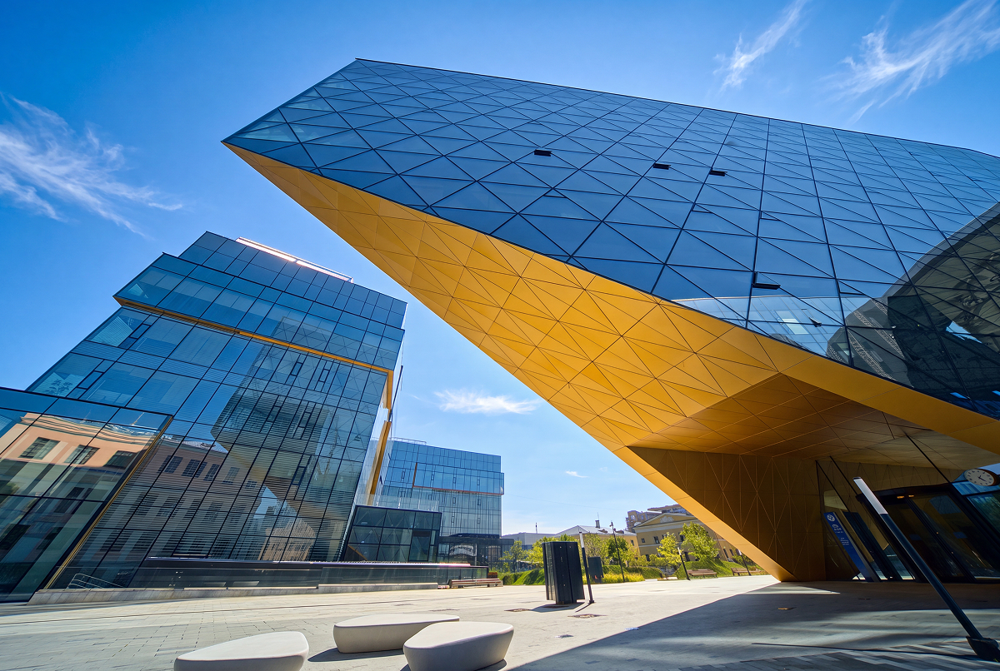
МГТУ им. Баумана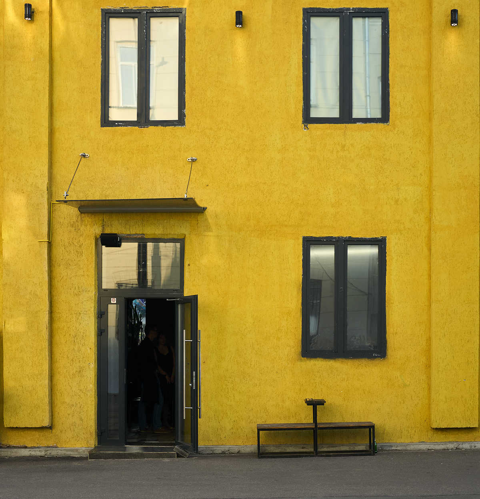
Artplay МГТУ им. Баумана
МГТУ им. Баумана
И это не единственное место, где любители искусства и коллекционеры могут открыть для себя новые имена. В ЦСИ Винзавод, например, уже много лет существует проект «Открытые студии», объединяющий принципы мастерской, резиденции и арт-школы. В рамках него каждые полгода экспертный совет отбирает перспективных авторов и предоставляет им возможность продемонстрировать свой талант на глазах у зрителей. По такому же принципу недавно тут стартовала новая программа «Зелено-Молодо» для независимых театральных трупп.
 ЦСИ Винзавод
ЦСИ Винзавод
Гастрономическая среда Басманного тоже заслуживает отдельного внимания. За эстетичным завтраком, например, стоит наведаться в Stim Coffee (Стим Коффи), где подают 10 видов сырников и кофе высшего качества. Такое начало дня станет отличным завершением громкой ночи на территории кластера «Суперметалл», где почти каждый уикенд устраивают масштабные фестивали с участием популярных артистов электронной сцены и медиа-художников. Если же вам по душе более камерные тусовки, то у Басманного есть и для вас предложение — «Оригинал.». В его небольшом пространстве и во дворе каждую неделю организовывают концерты, стендапы и рейвы.
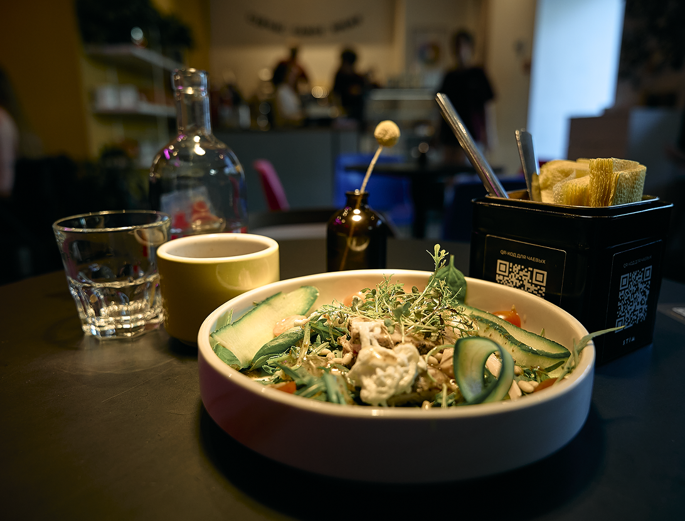
Stim Coffee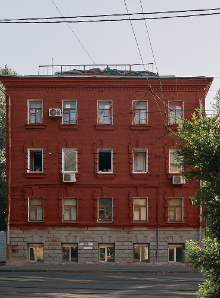
Басманный район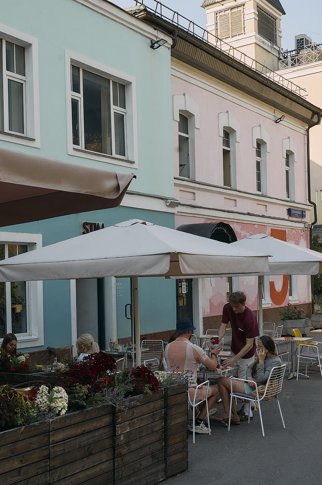
Stim CoffeeПосле насыщенных выходных ворваться в рабочие будни поможет чашка бодрящего кофе из «Кароче кофе» или сетевой кофейни Surf прямо у метро «Бауманская». Для долгой работы за ноутбуком подойдут «Лицей» или «Культурный код». Там к продуктивной работе располагают лаконичный интерьер, ненавязчивая музыка и хороший свет, а в перерыве отсюда будет удобно выйти на прогулку по Елоховскому скверу или Лефортовскому парку, дойти до теннисного корта, летнего кинотеатра в саду им. Баумана, а зимой — до катка.
Для романтического свидания классным вариантом станет кондитерская Kalabasa, где все (блюда, посуда, сервировка) продумано до мелочей. Неплохим вариантом будет и просмотр фильма на проекторе за бокалом вина в «Публике» или иммерсивного спектакля в библиотеке им.Пушкина. В общем, заведений много, хватит на все случаи жизни.
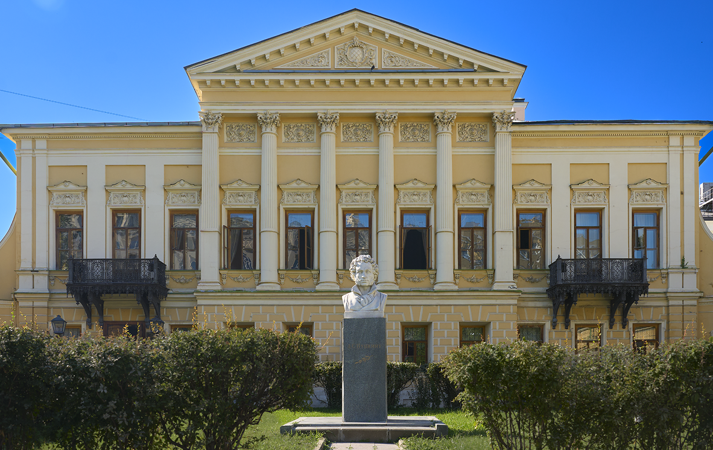
Библиотека имени А.С. Пушкина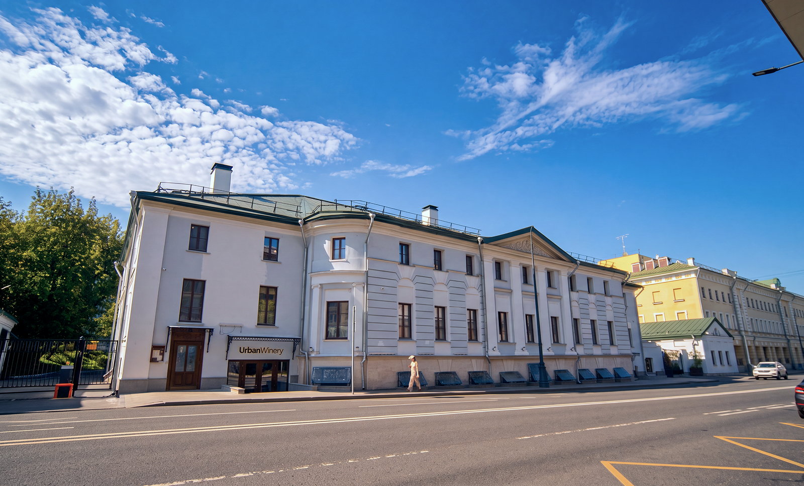
Urban Winery /Усадьба Савиных-Закревских
 Urban Winery / Усадьба Савиных-Закревских
Urban Winery / Усадьба Савиных-Закревских
Новая жизнь
старого Басманного
Главное очарование Басманного не только в количестве мест, а в том, как здесь взаимодействуют эпохи. Старые усадьбы становятся ресторанами, бывшие промышленные корпуса — галереями, а исторические улицы продолжают жить современной городской жизнью. Благодаря этому прогулка по району всегда превращается в открытие: сегодня вы можете случайно зайти на выставку в бывшем заводском цехе, а завтра — обнаружить новое гастрономическое пространство в особняке XVIII века. Например, Urban Winery — винодельню полного цикла и ресторан, расположенный в усадьбе Савиных-Закревских с высокими дубовыми окнами, лепниной и 16 каминами.
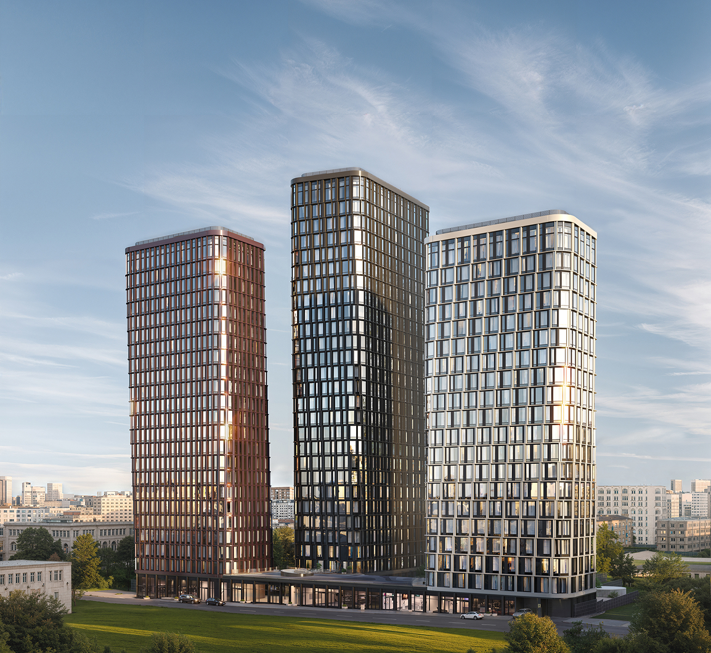
Премиум-квартал «Дом 56» на БауманскойПри этом Басманный не превращается в музей под открытом небом. Район продолжает развиваться и притягивать новых жителей, сохраняя баланс между историческим наследием и городским комфортом. Именно поэтому новые проекты здесь становятся органичной частью уже сложившейся среды, а не существуют отдельно от нее.
 Премиум-квартал «Дом 56» на Бауманской
Премиум-квартал «Дом 56» на Бауманской
Хороший пример такого подхода – жилой квартал премиум-класса «Дом
56» на улице Фридриха Энгельса. Его архитектура словно продолжает
диалог прошлого и настоящего, который давно стал отличительной
чертой Басманного. Не случайно в основе концепции проекта лежит
история самого района. Словом «басма» когда-то называли тонкие листы
серебра, золота или меди с тисненым рисунком, которыми украшали
иконы. Этот образ архитекторы переосмыслили в современном ключе:
фасады трех башен жилого квартал «Дом 56» облицованы металлическими
панелями с оттенками меди, никеля и стали, ставшим своеобразным
оммажем традициям старой Басманной слободы.
Однако ценность
проекта заключается не только в архитектуре. «Дом 56» встроен в
повседневную активную жизнь района: отсюда можно пешком дойти до
Бауманки, Винзавода и Artplay, Лефортовского парка и набережной
Яузы. При этом жилой квартал расположен в более спокойной части
Басманного, позволяя оставаться в центре культурной и городской
жизни без постоянного ощущения суеты мегаполиса.
Хороший пример такого подхода – жилой квартал премиум-класса «Дом 56» на улице Фридриха Энгельса. Его архитектура словно продолжает диалог прошлого и настоящего, который давно стал отличительной чертой Басманного. Не случайно в основе концепции проекта лежит история самого района. Словом «басма» когда-то называли тонкие листы серебра, золота или меди с тисненым рисунком, которыми украшали иконы. Этот образ архитекторы переосмыслили в современном ключе: фасады трех башен жилого квартал «Дом 56» облицованы металлическими панелями с оттенками меди, никеля и стали, ставшим своеобразным оммажем традициям старой Басманной слободы.
Эта идея баланса сохраняется и внутри самого квартала. Для жителей предусмотрен закрытый зеленый двор площадью около 4 000 кв.м с детскими игровыми зонами, спортивными площадками, качелями, местами для отдыха, встреч и общения. Пространство спроектировано таким образом, чтобы здесь было комфортно проводить время людям разных возрастов и с разным образом жизни. А в холодное время года или непогоду центром притяжения для семей станет игровой клуб в гранд-лобби на первом этаже с зонами для творчества, мастер-классов и интерактивных квестов, а также проектором для просмотра мультфильмов.
Однако ценность проекта заключается не только в архитектуре. «Дом 56» встроен в повседневную активную жизнь района: отсюда можно пешком дойти до Бауманки, Винзавода и Artplay, Лефортовского парка и набережной Яузы. При этом жилой квартал расположен в более спокойной части Басманного, позволяя оставаться в центре культурной и городской жизни без постоянного ощущения суеты мегаполиса.
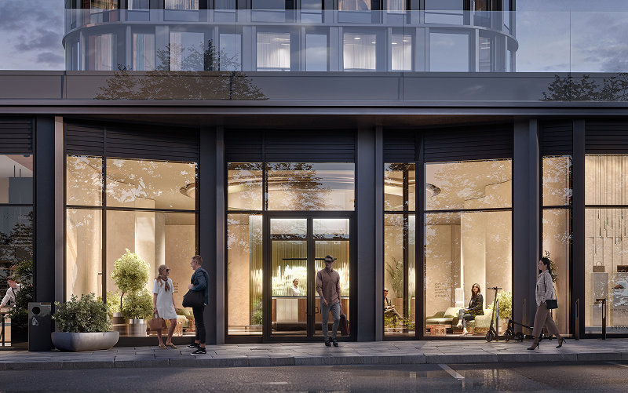

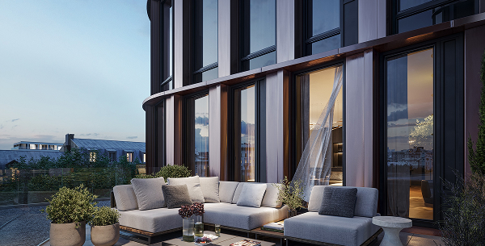
Продуманы в проекте и решения, которые делают переезд проще. Так, в одной из башен все квартиры представлены с готовой дизайнерской отделкой в двух вариантах — Smart White в светлых бело-бежевых тонах и Casual Grey в спокойной бело-серой гамме. Благодаря этому будущие жители смогут быстрее обустроиться на новом месте и сосредоточиться на знакомстве с районом.
Эта идея баланса сохраняется и внутри самого квартала. Для жителей предусмотрен закрытый зеленый двор площадью около 4 000 кв.м с детскими игровыми зонами, спортивными площадками, качелями, местами для отдыха, встреч и общения. Пространство спроектировано таким образом, чтобы здесь было комфортно проводить время людям разных возрастов и с разным образом жизни. А в холодное время года или непогоду центром притяжения для семей станет игровой клуб в гранд-лобби на первом этаже с зонами для творчества, мастер-классов и интерактивных квестов, а также проектором для просмотра мультфильмов.
Именно такие детали во многом и определяют современный характер Басманного. И «Дом 56» наглядно показывает, как сегодня может выглядеть жизнь в одном из самых самобытных районов Москвы – в окружении культуры, архитектуры, и с возможностью в любой момент вернуться в собственное тихое пространство.
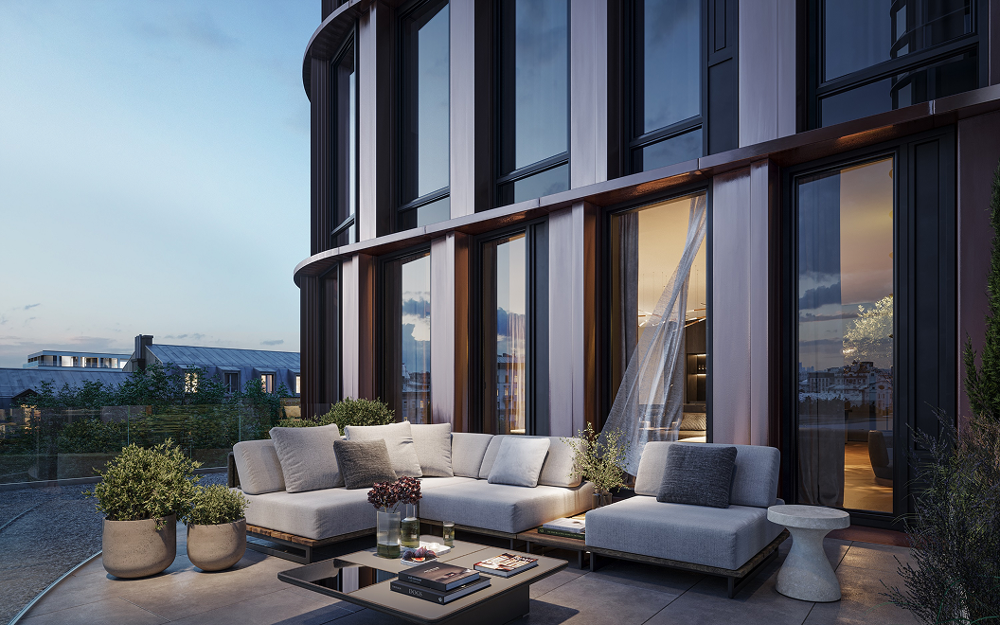
Именно такие детали во многом и определяют современный характер Басманного. И «Дом 56» наглядно показывает, как сегодня может выглядеть жизнь в одном из самых самобытных районов Москвы – в окружении культуры, архитектуры, и с возможностью в любой момент вернуться в собственное тихое пространство.